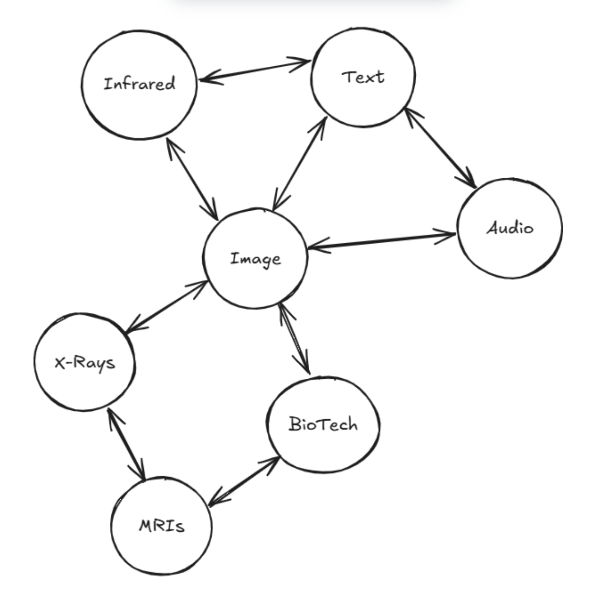
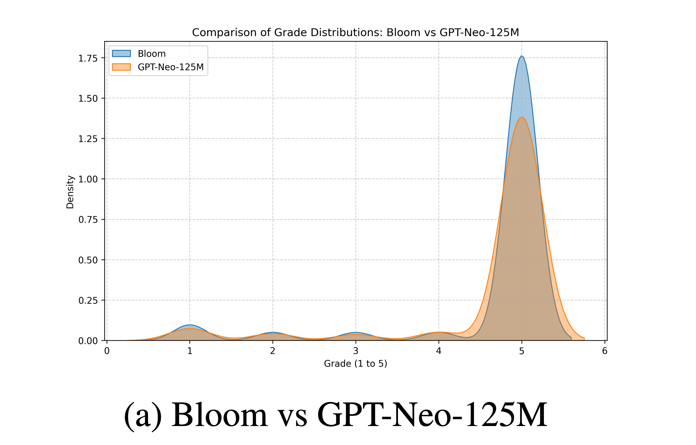
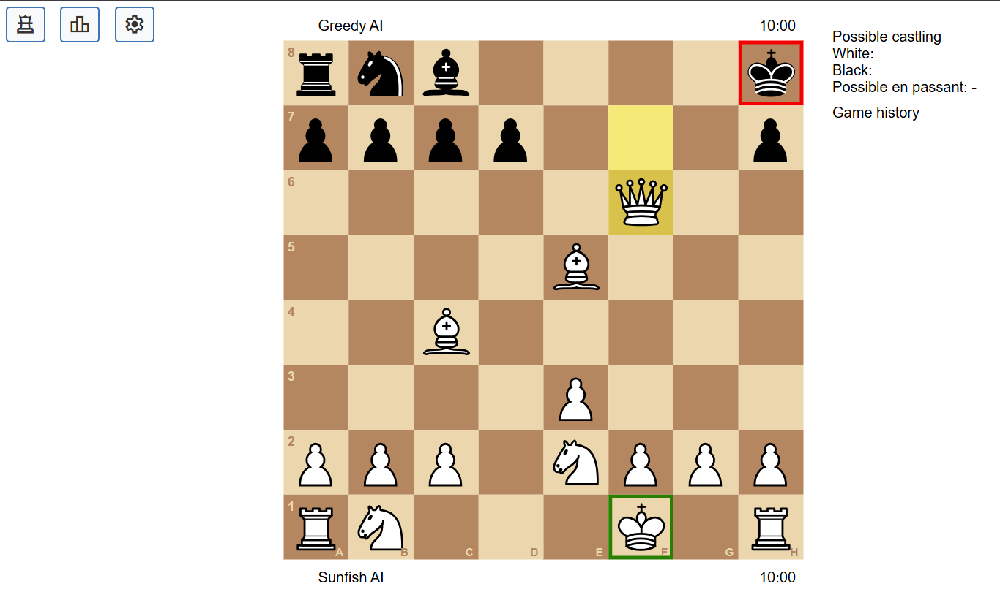
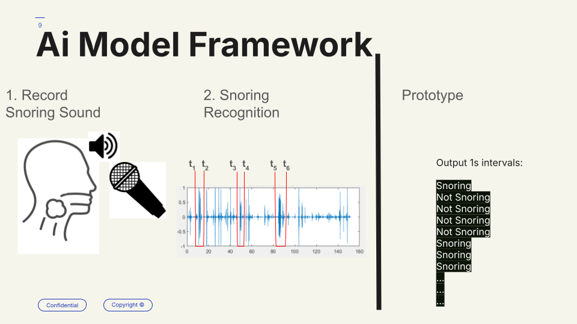
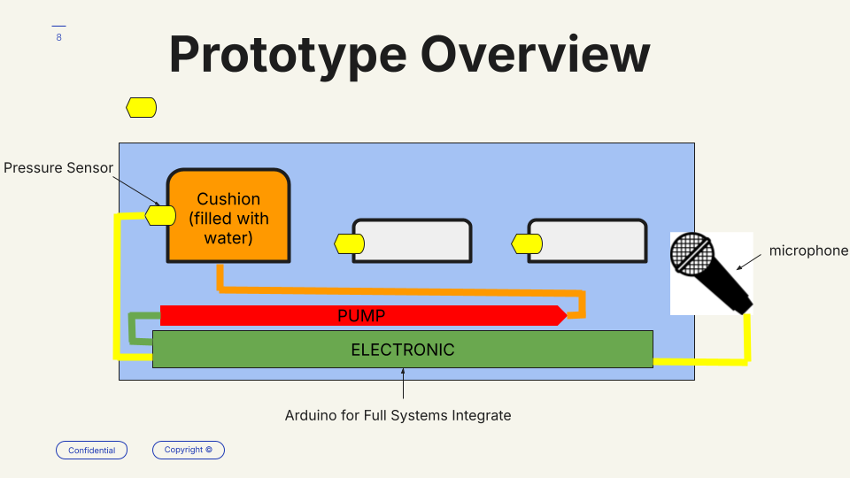
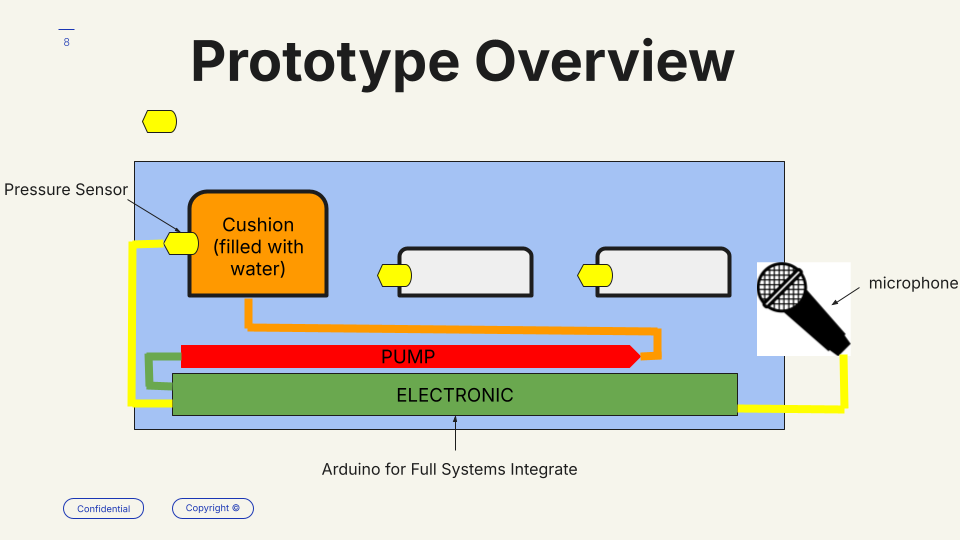
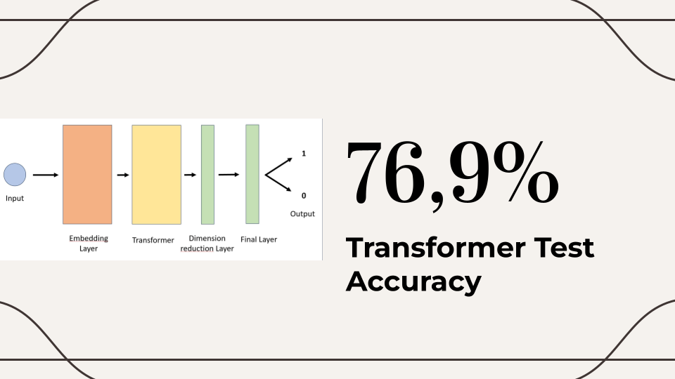
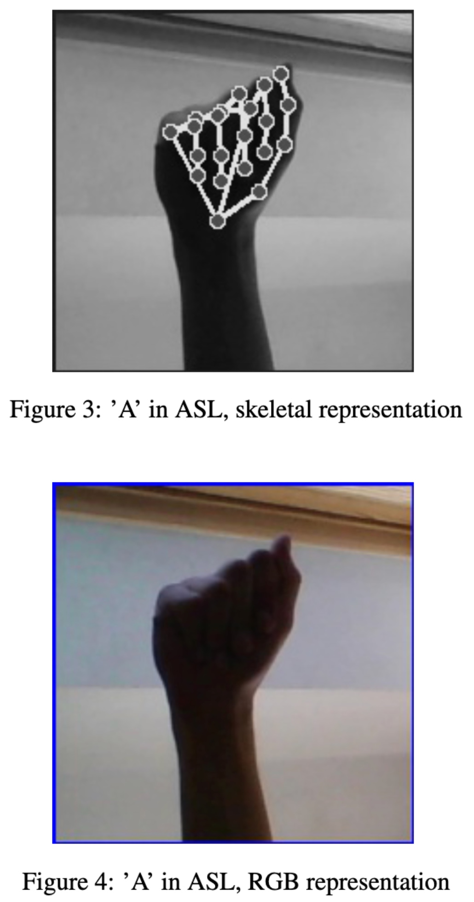
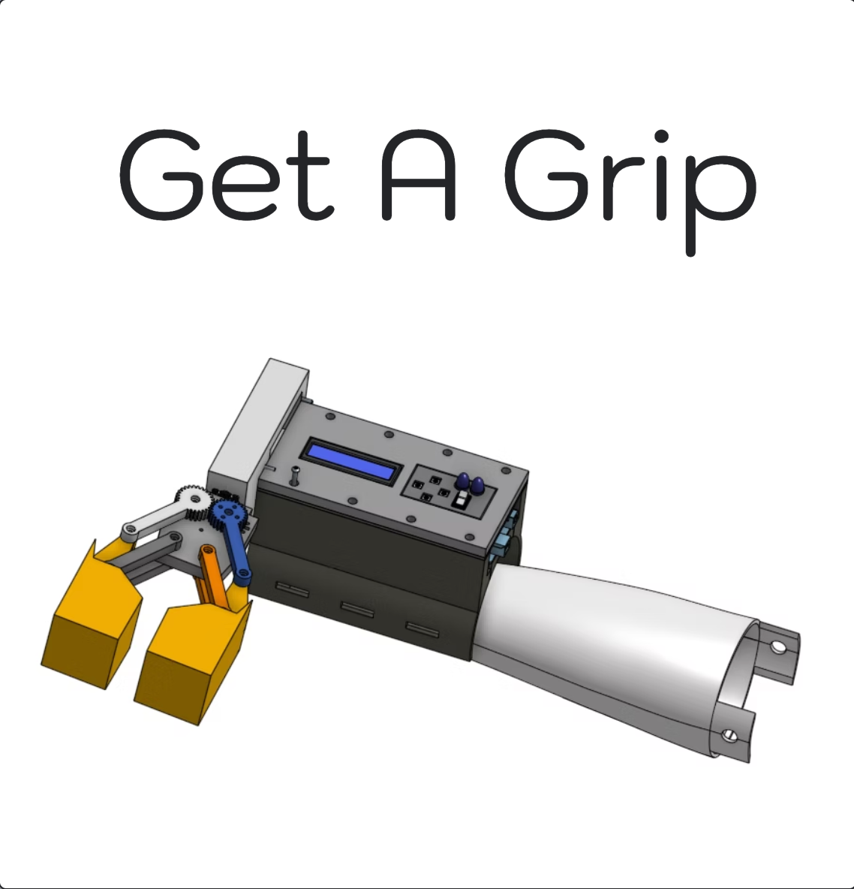
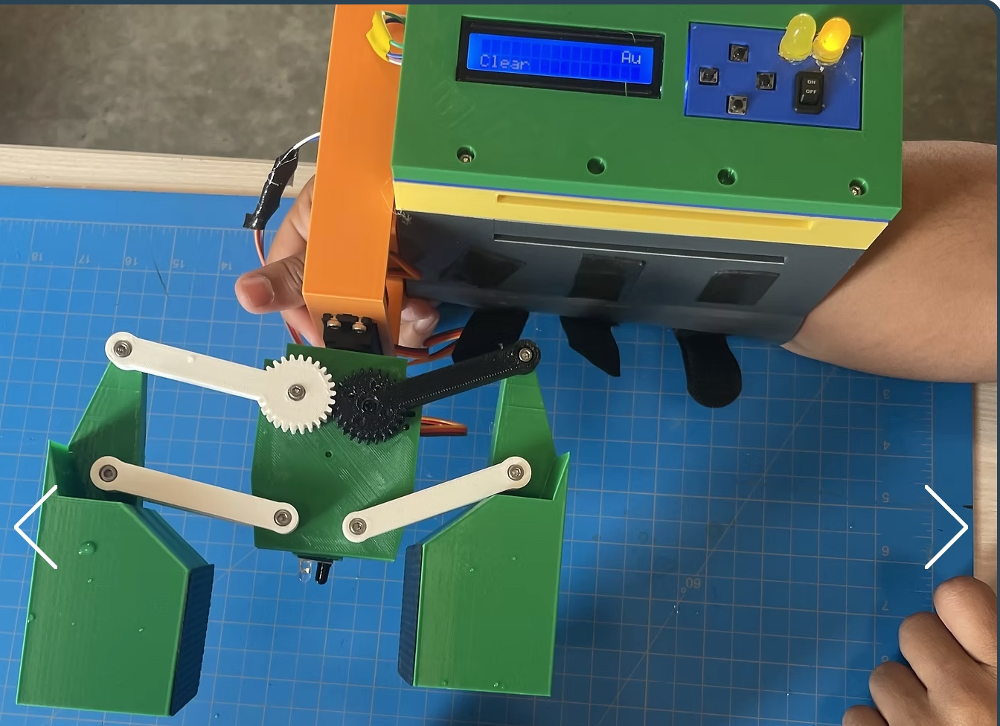

Hello, I'm Yann. I'm an Electrical and Computer Engineering student focusing on Machine Learning and AI. Below are some of my key projects and research highlights.

View Paper
Multimodal Embedding Alignment (Winter 2025)
- A research-based project developing a framework to bridge modalities using contrastive learning.
- Focused on aligning audio, image, and text embeddings using deep learning and projection heads.
Team project with Michael
View on GitHubView Paper

View Paper
NLP: LLM → SLM Distillation for Spanish Summarization (Winter 2025)
- Distilled large language model knowledge into a lightweight model for Spanish text summarization.
- Evaluated downstream performance and interpretability across tasks.
View Paper

View Paper
Reinforcement Learning: Chess Bot RL Environment (Winter 2025)
- Created a modular and easy-to-modify backend/frontend design for testing different algorithms in chess.
- Provided multiple evaluation metrics for AI vs AI, including an ELO system.
Team project with Enzo, Shashwat, and Luis
View on GitHubView Paper


View Presentation

Smart Pillow – Anti-Snoring Product Pitch (Winter 2025)
- A business-focused engineering project involving the design and pitch of a smart anti-snoring pillow.
- Includes prototype development and market research.
Team project with Fabien and Basile
Link to GitHubView Presentation

View Kaggle Leaderboard
View Paper
View Presentation
ML for Tweet Classification (Fall 2024)
- Placed Second in Kaggle Competition for the Project.
- Supervised learning project to classify whether a tweet was sent during a crucial moment in a soccer match.
- Explored feature extraction, model selection, and evaluation metrics.
Team project with Violette
View on GitHubView Kaggle Leaderboard
View Paper
View Presentation

View Paper
View Video on Canva
ASL Recognition CNN (Winter 2024)
- A ResNet-based approach for classifying American Sign Language letters using skeletonized hand images.
Team project with Sebastian
View on GitHubView Paper
View Video on Canva


Gripper Arm – Assistive Device (Spring 2023)
- Forearm-mounted device assisting those with limited hand mobility.
- PCB design, CAD, and embedded C code.
Team project with Quoc and Tahseen
Project Site